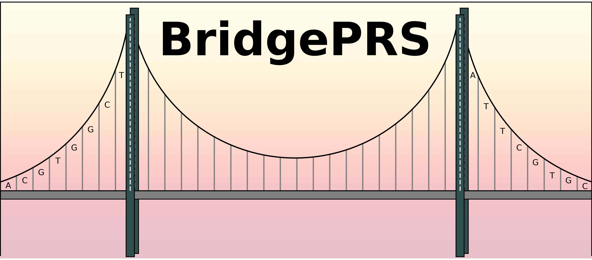

BridgePRS is a trans-ancestry PRS software which improves polygenic risk score analysis in diverse populations.
Citation
Please cite the BridgePRS manuscript from Bioarchiv
Authors
For more details on the authors, see:
Acknowledgement
BridgePRS is a software package written in R (main) and Python (wrapper, plotting). The code relies on PLINK by Christopher Chang. We also utilize the Eigen C++ library, the gzstream library.